A painted picture book about a walk outside. Matte gouache, tinted papers, a blue ink line that wobbles a little, washi tape and fair-day rosettes. It grows out of the painted splash and the illustrated Home the game already has.
Concept only. Wildling names, rarities, biomes and item titles are real; levels, counts and prices are illustrative. All art on this board was generated for the study. The creature portraits are repaints of the game's real models: same animals, same shapes, painted skins.
Three paper-cut titles, like a picture-book cover. Geo Pets is the name and WORLD is at least as prominent, in different lettering: a painted globe for the O, a string of bunting, and a leaf banner. Two app icons keep the selected leaf-eared companion and repaint it.
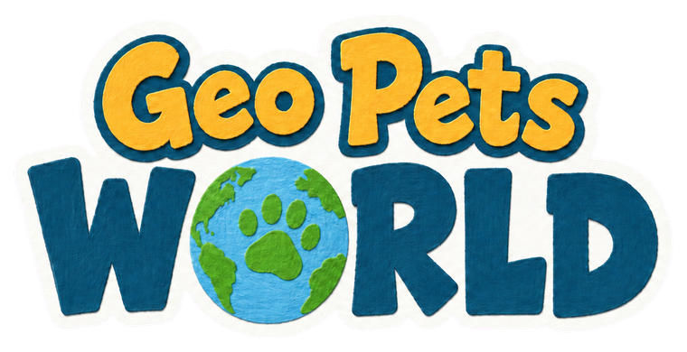
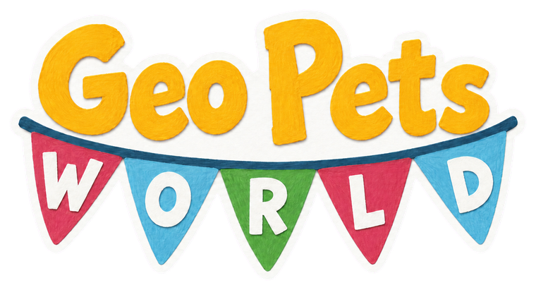
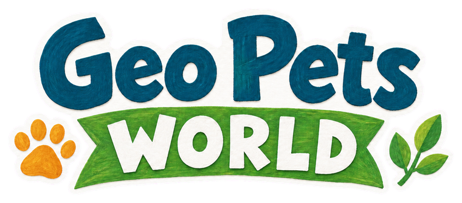
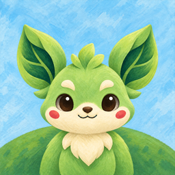
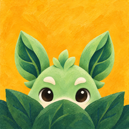
Each phone is exactly 390×844. Scroll sideways.
SplashA paper-cut title over the painted world, and an account note taped to the page.
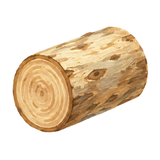
✓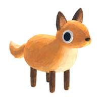
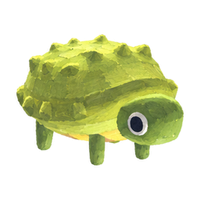
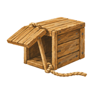
4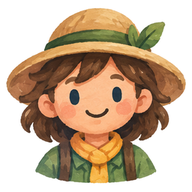
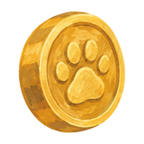
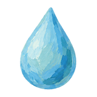
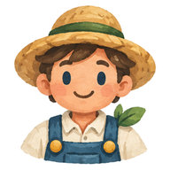
20World map and HUDThe game's real map, repainted. The roads, the rocky biome, the sea, the tree patch and the market stalls are where they are in today's game. Markers are paper discs on sticks; a rare Wildling wears its gold rosette out in the world too.
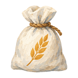
0:42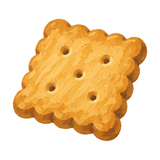
1:10HometownThe game's Hometown, repainted, with every building it has today. Working buildings carry a paper tag with their timer; idle ones stay quiet; the padlocked archway gets a small lock; finished goods arrive with a note, as decided today.
Wildling collectionA field journal page. Each Wildling is a plate in an oval painted with its biome's wash; a blue rosette marks uncommon and a gold one rare. Missing ones are a pencilled question mark.
InventoryItems as sketchbook studies on little squares of paper, each count in a dab of marigold paint. The storage meter follows today's decision that the inventory has a capacity you can upgrade; whether materials and goods get separate limits is still open, so one is shown.
Confirmation popupA note taped over the map: what you get, how long it takes, and the price on the button. Tapping outside still dismisses it.